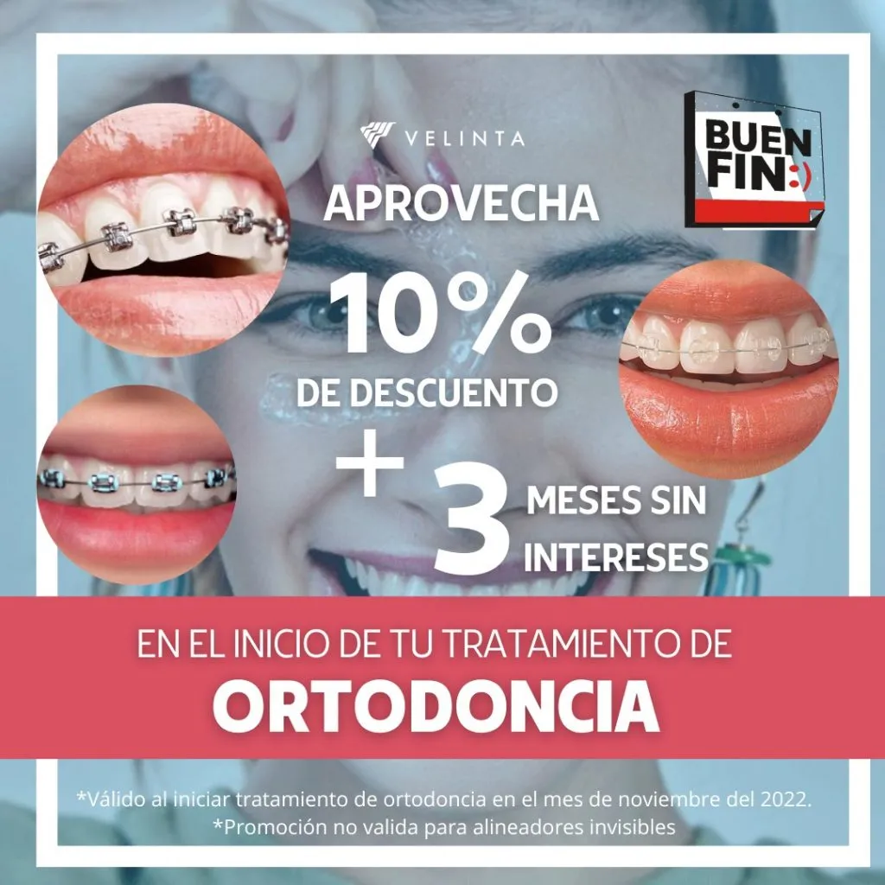

Los mejores dentistas en México,
Disfruta lo más barato del año, del 18 al 21 de Noviembre
Acerca de Clínica Dental
Realizamos tratamientos de ortodoncia en México. Con un examen clínico previo, podemos recomendar el tratamiento de ortodoncia ideal para
Son muy cómodos, prácticos y económicos, a los niños les encanta por sus cambios de colores de sus módulos y muy llamativos.
La tecnología de auto ligado elimina la necesidad de ligaduras que se utilizan para sujetar el arco a los brackets, en cambio tienen como especie de una compuerta que lo hace.
Los Brackets de Zafiro son la evolución natural de los Brackets estéticos, por ser de apariencia cristalina permiten pasar la luz, dejando ver el color real del diente.
Si quieres que tu tratamiento de ortodoncia sea menos llamativo, los BRACKETS DE ZAFIRO, son una excelente opción. Casi no se notan en las fotos sociales al ser más discretos. Además, funcionan tan bien como los metálicos y el resultado será el mismo. Independientemente del tipo de brackets que se utilice, el diagnóstico y la mecánica de tratamiento del especialista pondrá la diferencia.
Ver másTambién conocidos como Micro tornillos, o también llamados orto implantes, estos son pequeñas fijaciones de titanio que se colocan en los huesos maxilares de forma temporal durante el tratamiento de ortodoncia.
La ORTOPEDIA MAXILAR se encarga del tratamiento y prevención de los desórdenes óseos y funcionales de los maxilares en pacientes en crecimiento(niños).
Realizamos tratamientos de ortodoncia en Acapulco, Guerrero. Con un examen clínico previo, podemos recomendar el tratamiento de ortodoncia ideal para
Se refiere a un diseño digital de sonrisa que se realiza a través del estudio de la relación que existe entre: Dientes, Encías, Labios del paciente.
Las carillas son com una láminas finas que cubren la parte de enfrente de los dientes.
Este tipo de tratamientos consiste en un procedimiento con fines estéticos a través del cual se contornean las encías, buscando devolver su forma natural.
Blanqueamiento dental
Se trata de un gel especial que se coloca en la superficie del diente y elimina manchas internas y externas que producen un cambio
en el tono del mismo.
Hay diferentes tipos de geles o blanqueamientos:
Permite concentrar su acción, en un gel de mayor concentración y en pocas sesiones en nuestro consultorio dental podrás lucir una sonrisa varios tonos más blanca, que al comienzo del tratamiento dental.
Es un tratamiento que puedes realizar tú mismo en tu domicilio, con una cubeta dental y gel blanqueador, que te proporcionamos en consulta, totalmente personalizado según tu caso. Este tratamiento dental se realiza siempre bajo supervisión del odontólogo sin olvidar las revisiones indicadas.
Está indicado para los dientes que se han oscurecido, después de una endodoncia (tratamiento de conductos), y su objetivo es devolver la tonalidad a un diente en específico. Solo se puede hacer en dientes sin vitalidad, y se realiza en varias sesiones, es un procedimiento que no duele y no requiere anestesia.
El tratamiento de endodoncia o también conocido como tratamiento de conducto consiste en un procedimiento en el cual se extirpa la pulpa o nervio del diente y el posterior relleno y sellado.
La cirugía maxilofacial hace referencia a cualquier procedimiento quirúrgico en o alrededor de la boca.
Un implante dental es un componente de titanio en forma de un tornillo que sustituye a la raíz de un diente natural.
La cirugía ortognática tiene como objetivo corregir la posición del hueso maxilar y de la mandíbula, es decir, se encarga de corregir las discrepancias ó alteraciones dentofaciales, restableciendo la armonía del rostro.
Se trata de una técnica quirúrgica a través de la cual se logra ó facilita los movimientos dentales y ayuda también a disminuir el tiempo del tratamiento ortodontico. Consiste en realizar cortes ó perforaciones en la porción cortical del hueso.
Es un procedimiento quirúrgico en donde se retira el tejido graso encapsulado (Bolsas de Bichat) que está ubicado en las mejillas, esto se realiza para mejorar los rasgos faciales, creando una percepción óptica de tener una cara más alargada y delgada y así mejorare el aspecto estético.
¿Buscas Dentistas en México? Saca una cita.
Si buscas un dentista cerca de ti en México, nos puedes encontrar en Fracc xxxxxx, calle la Nao. Col. La Bocana Torre Médica Del Pacífico Piso 10 consultorio 1005 México.
Estamos a:
4 minutos de Acapulco Costera
12 minutos de Costa Azul
18 minutos de Emiliano Zapata
30 minutos de Acapulco Diamante
!Nos haría muy feliz atenderte¡
Tel: 74435222545
WhatsApp: 7852148
correo@hotmail.com
Horarios: L-V 11:00 am - 8:00 pm
Tu nombre
Teléfono
Tu correo electrónico
En qué podemos ayudarte
 Tel. 7442622815
Tel. 7442622815 Horarios: L-V 10:00am - 8:00pm
Horarios: L-V 10:00am - 8:00pm Fracc. xxxxxx, calle xxxx
Fracc. xxxxxx, calle xxxx